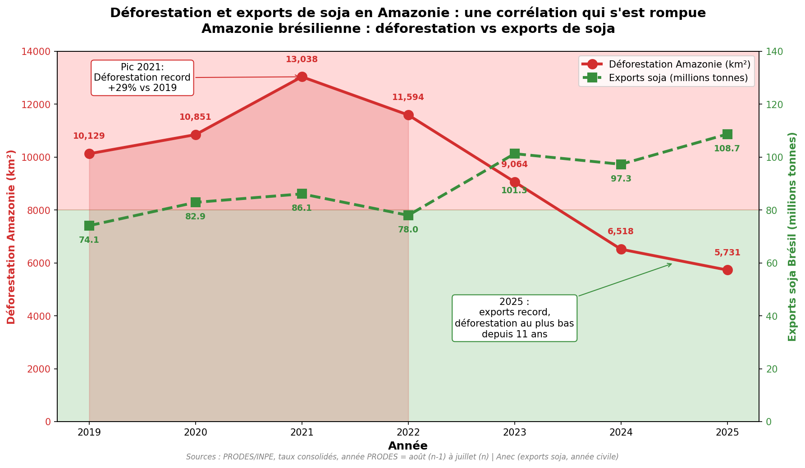
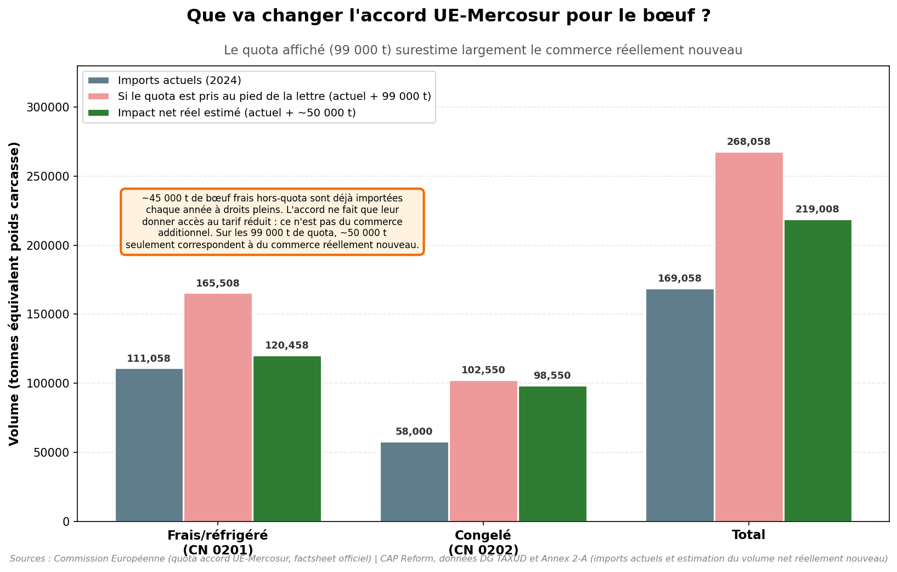
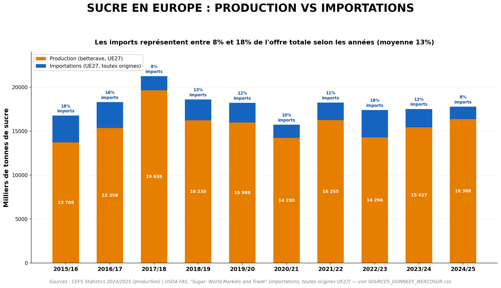
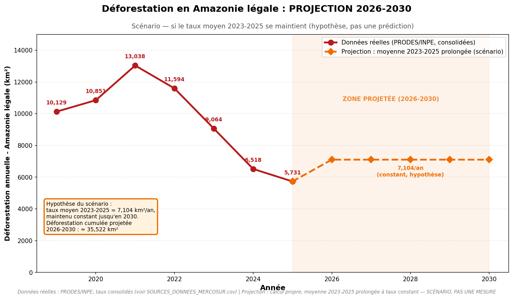
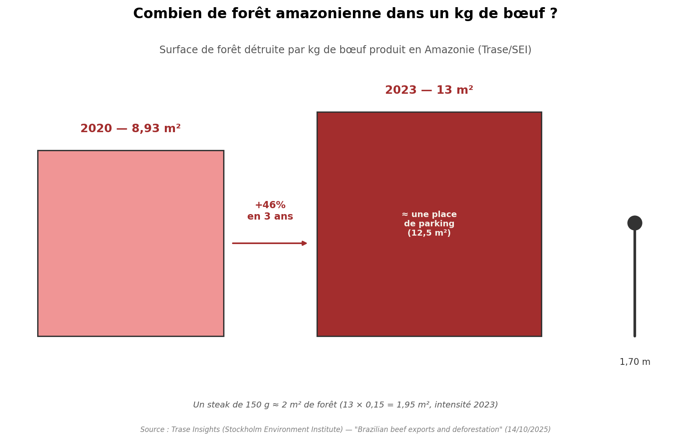
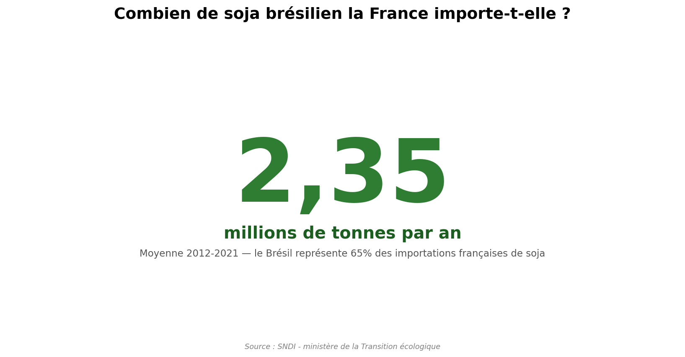

Analyse des liens entre commerce et environnement
Données 2020-2025
L'accord UE-Mercosur, finalisé en décembre 2024, est le plus grand accord commercial jamais négocié par l'Union européenne. Il concerne le Brésil, l'Argentine, le Paraguay et l'Uruguay - des pays qui abritent l'Amazonie et le Gran Chaco, deux des écosystèmes les plus menacés au monde.
Ce graphique montre l'évolution parallèle de la déforestation amazonienne et des exports de soja brésiliens entre 2019 et 2025.

Sources : PRODES/INPE (déforestation), USDA FAS (exports soja)
L'accord crée un nouveau quota de 99 000 tonnes de bœuf à droit réduit. Mais une bonne partie de ce volume remplace du commerce qui existe déjà hors-quota, à droits pleins : le commerce réellement nouveau est nettement plus faible que le chiffre du quota affiché.

Sources : Commission Européenne (quota), CAP Reform / DG TAXUD (imports actuels et estimation du volume net)
| Bœuf (t équiv. carcasse) | Imports actuels (2024) | Quota nominal accord | Net réellement nouveau (estimé) |
|---|---|---|---|
| Frais/réfrigéré | 111 058 t | +54 450 t | +9 400 t |
| Congelé | 58 000 t | +44 550 t | +40 550 t |
| Total | 169 058 t | +99 000 t | +49 950 t |
L'accord UE-Mercosur ajoute un quota de 190 000 tonnes de sucre (180 000 t existantes reconduites + 10 000 t nouvelles pour le Paraguay). Pour situer l'ampleur de ce chiffre, voici la production européenne de sucre de betterave comparée aux importations totales (toutes origines, pas seulement Mercosur).

Sources : CEFS Statistics 2024/2025 (production) ; USDA FAS, "Sugar: World Markets and Trade" (importations)
Le taux annuel de déforestation en Amazonie légale a baissé chaque année depuis le pic de 2021. Ce graphique projette un seul scénario : si la moyenne du taux observé sur 2023-2025 se maintient telle quelle jusqu'en 2030.

Données réelles 2019-2025 (PRODES/INPE, taux consolidés) et projection 2026-2030 (scénario, pas une prédiction)
Combien de mètres carrés de forêt sont détruits pour produire 1 kg de chaque produit importé ?

Source : Trase Insights (Stockholm Environment Institute), "Brazilian beef exports and deforestation" (14/10/2025)

Source : SNDI - ministère de la Transition écologique
| Pays | Perte forêt 2022 (Mha) | Production soja 2024 (Mt) | Production bœuf 2024 (Mt) |
|---|---|---|---|
| Brésil | 3.31 | 154 | 11.85 |
| Argentine | 0.23 | 51 | 3.3 |
| Paraguay | 0.22 | 10.3 | 0.59 |
| Uruguay | - | - | 0.6 |